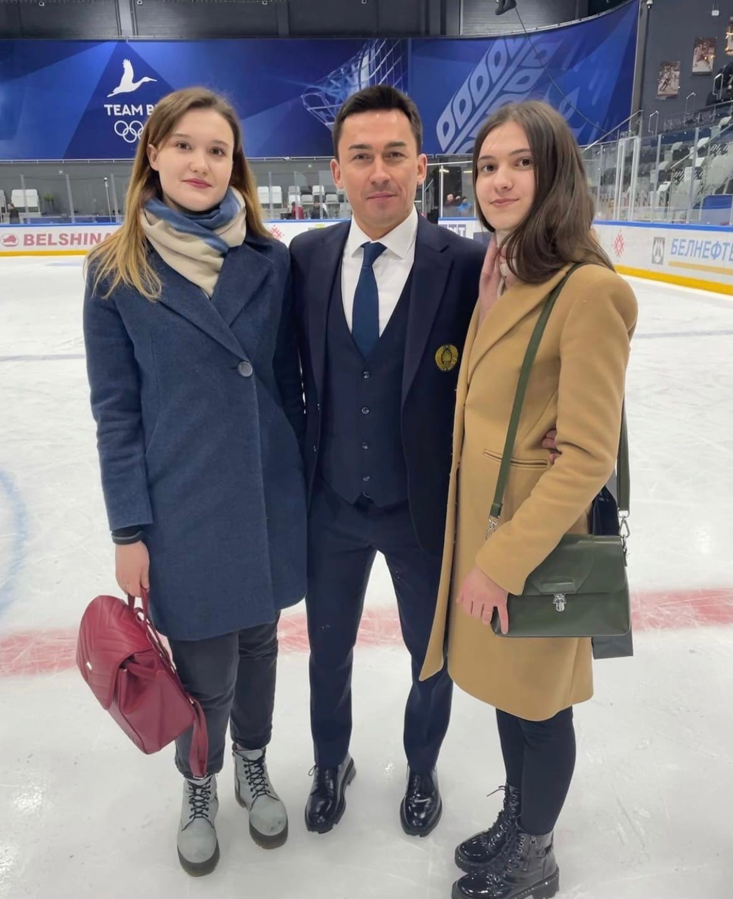
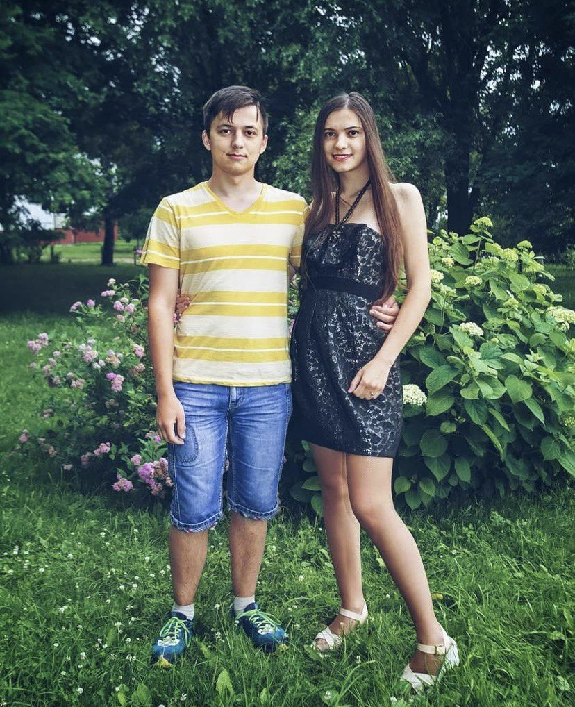
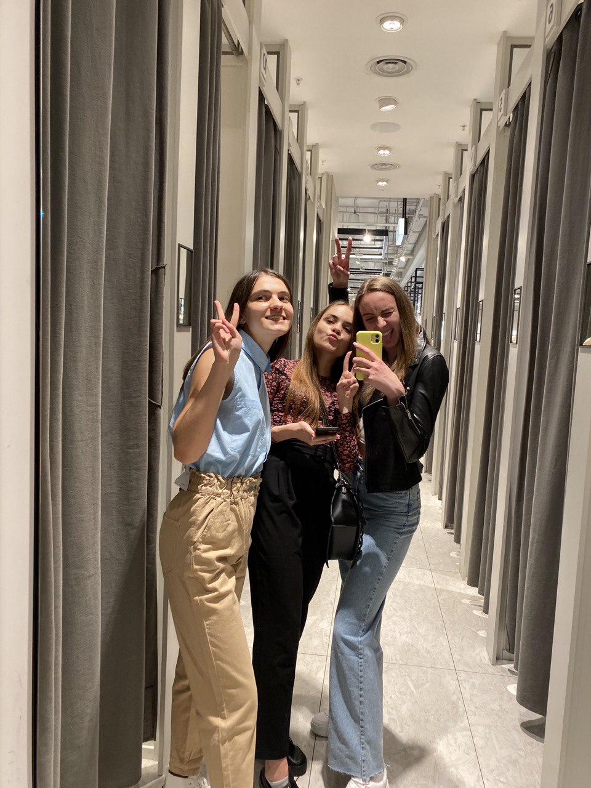
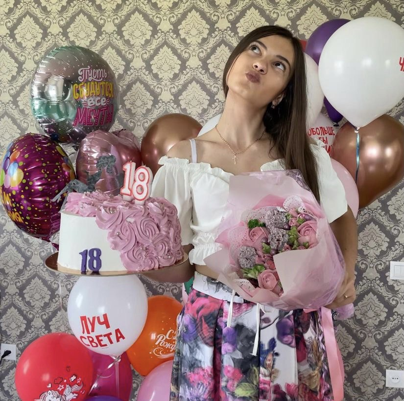
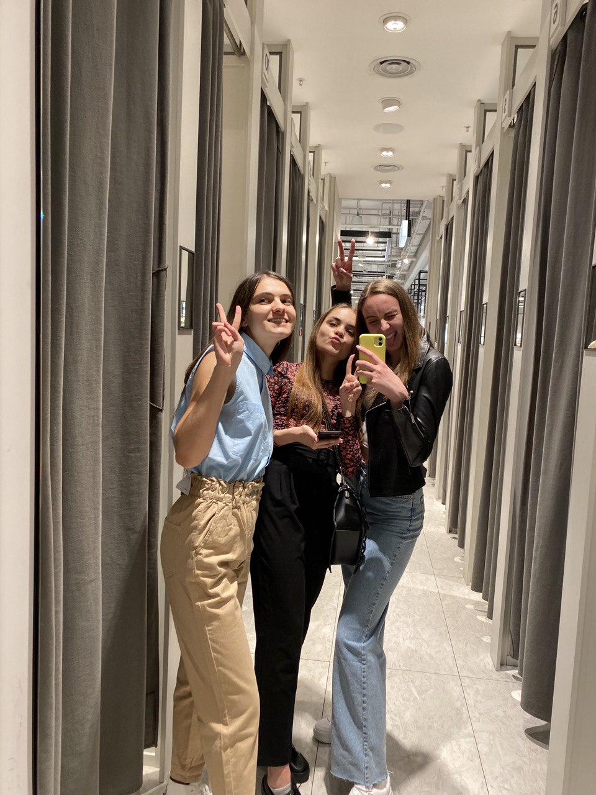
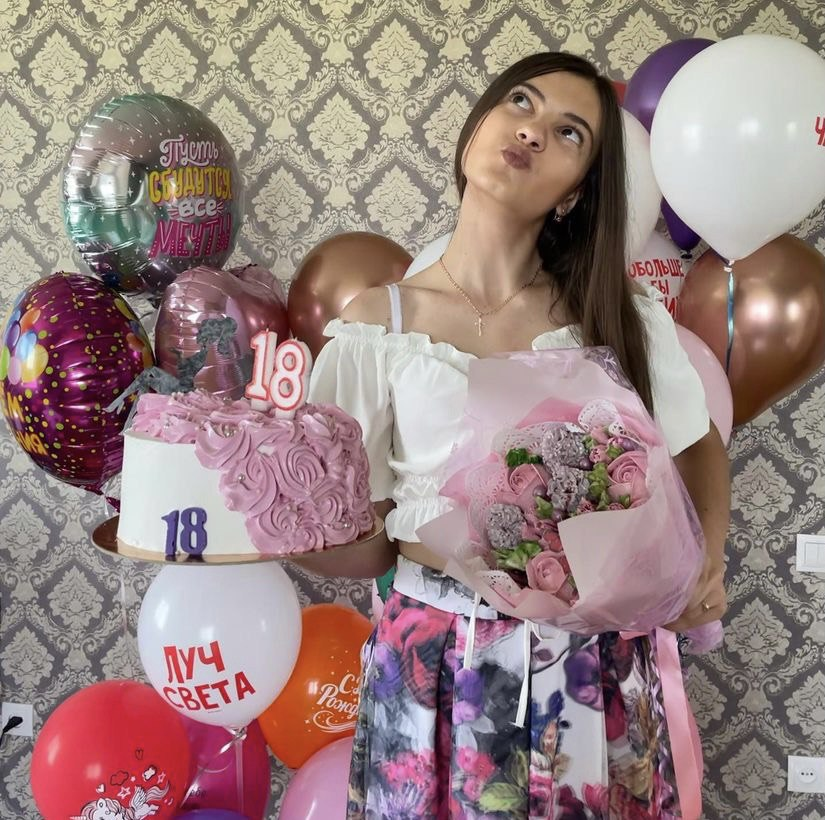

Аня Лизура
Здесь вы сможете узнать больше про Аню
.jpeg)
Аня Лизура
Здесь вы сможете узнать больше про Аню
Аня Лизура - моя подруга, соседка и студентка Академии управления! Жизнерадостная, ответственная, с весёлым чувством юмора девчонка. У Ани много различных увлечений о которых вы узнаете ниже.

Как можно заметить на фото, Аня из Слободы. Вообще, родилась Аня 5 июля 2003 года в г. Минске, но после её рождения родители переехали в Слободу (Смолевичский р-н; рядом с Курганом Славы).
Аня просто нереальная фанатка хоккея! Как только начинается сезон хоккея, ищите Аню на арене хихихи:D

С самого детства Аню тянуло на творчество, поэтому с 1 класса она пошла в музыкальную школу на класс Хореографии, на класс Фортепиано и вокал. Вокалом Аня занималась не долго, а вот по классам Хореографии и Фортепиано она закончила музыкальную школу.
Помимо этого, Аню тянуло и на компьютер, всё благодаря брату. Все детство она провела рядом с ним, сидя у компьютера. Вместе они играли в GTA, CS, CrossFire и многие другие игры. Также, одна из любимых игр детства – конечно же Sims. А потом Аня начала увлекаться съёмкой видео. И теперь у неё есть свой крутой канал в ТикТоке, где много интересных и весёлых видео.

Как вы уже поняли, Аня очень яркий человечек. С ней всегда интересно и никагда не бывает скучно. А ещё Аня у нас хацкер, только тссс...
.jpeg) 



Аню всегда можно найти здесь!